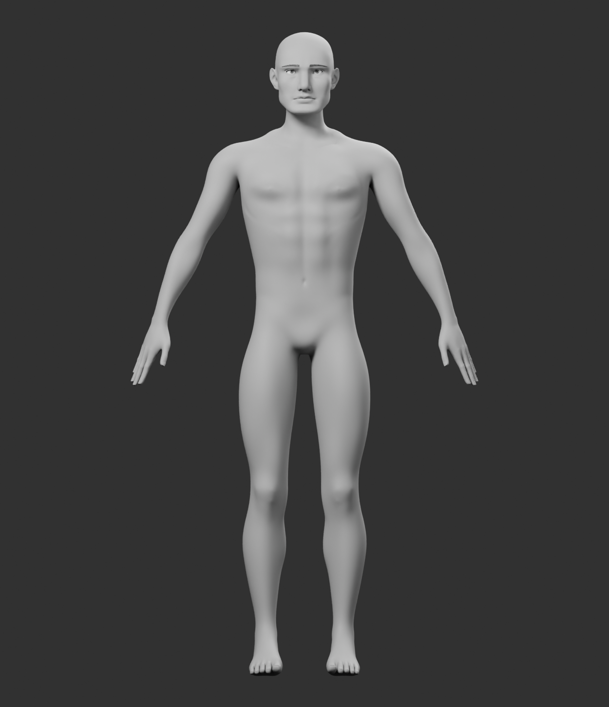
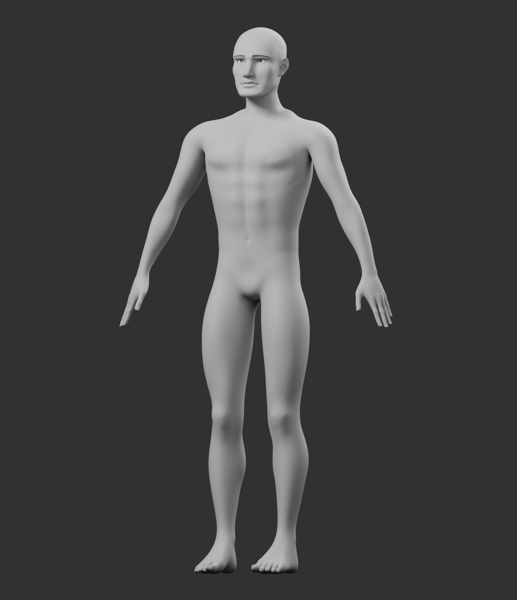
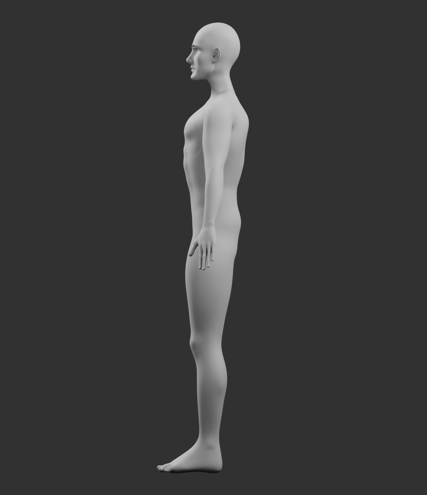

SilverScreen · neutral geometry review · anatomy pass 02
Revised male body foundation
Body direction awaiting visual approval
Approved head preserved unchanged
Approved head preserved unchanged





